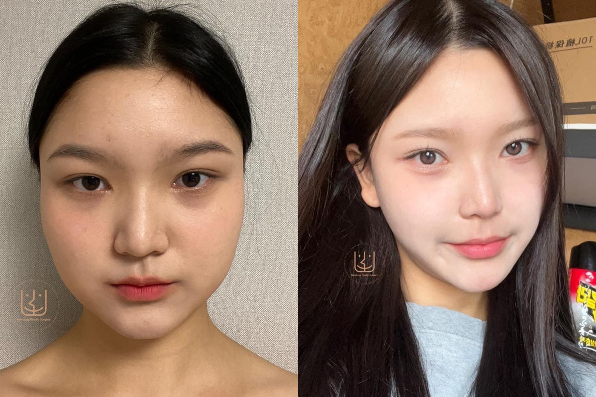

เพราะความไม่เร่งรีบที่ควบคู่กับความปลอดภัยคือ พื้นฐานความงาม ที่ บาโนบากิ ยึดเป็นเป้าหมายหลัก Banobagi Hospital จึงดูแลความงาม บนพื้นฐานความละเอียดอ่อน โดยศัลยแพทย์ผู้เชี่ยวชาญเฉพาะทางที่ได้รับการขนานนามว่า “Detailist” หรือ “ผู้ใส่ใจรายละเอียด” ซึ่งมาจากคำว่า Detail และ Specialist จึงมีความหมายว่า กลุ่มแพทย์ผู้เชี่ยวชาญที่มีฝีมือและความละเอียดอ่อนในทุกขั้นตอน ไม่ว่าจะเป็น ขั้นตอนก่อนศัลยกรรม รวมไปถึง การดูแลคนไข้หลังการศัลยกรรม Banobagi Plastic Surgery จึงรับรองว่าจะไม่ทำให้คุณเสียใจ แม้ผ่านไป 10 ปี
Banobagi Plastic Surgery พร้อมไปด้วยทีมศัลยแพทย์ผู้ใส่ใจในทุกรายละเอียดที่มีความชำนาญและเชี่ยวชาญอย่างมาก ร่วมด้วยกับการใช้เทคโนโลยี เครื่องมือทางการแพทย์ที่ทันสมัย และการใช้เทคนิคที่เฉพาะเจาะจงต่อความต้องการและปัญหาของคนไข้แต่ละราย Banobagi Plastic Surgery จึงสามารถสร้างผลลัพธ์ศัลยกรรมที่ดูโดดเดนแต่เป็นธรรมชาติและสอดคล้องกับความคาดหวังของคนไข้ได้ในทุกกรณี
โรงพยาบาลบาโนบากิมีกระบวนการพักฟื้นที่เป็นระบบและจะตรวจเช็คร่างกายของคนไข้อย่างต่อเนื่อง รวมถึงใช้เครื่องมือที่หลากหลายเพื่อให้ฟื้นตัวจากการผ่าตัดได้อย่างรวดเร็ว เพราะ Banobagi Plastic Surgery มุ่งเน้นการให้บริการที่มีคุณภาพสูงและเน้นความปลอดภัยของคนไข้ก่อนเสมอ เพื่อให้คุณมั่นใจในผลลัพธ์ที่จะได้รับและสามารถกลับไปใช้ชีวิตปกติได้อย่างมั่นใจ รวมถึงมีคุณภาพชีวิตที่ดีขึ้นหลังจากการรักษาศัลยกรรม ความตั้งใจนี้ของ Banobagi Hospital สะท้อนในการได้เป็นตัวแทนของสถานพยาบาลด้านความงามที่ให้การแปลงโฉมแก่ผู้เข้าร่วมรายการ Let me in ซึ่งผลลัพธ์หลังการรักษาศัลยกรรมของแพทย์โรงพยาบาลบาโนบากิได้แสดงให้เห็นถึงความเปลี่ยนแปลงที่สวยงามอย่างเป็นธรรมชาติที่ช่วยเปลี่ยนชีวิตพวกเขาให้ดีขึ้น
Banobagi Hospital ใส่ใจ รับฟัง และคารพการตัดสินใจของคนไข้เสมอ บาโนบากิคำนึงถึงพื้นฐานทางการแพทย์ มากกว่าการแนะนำการผ่าตัดที่มากเกินความจำเป็นเพื่อผลประโยชน์ของโรงพยาบาล การทำศัลยกรรมที่ บาโนบากิ เน้นแนะนำให้คนไข้ที่เข้ามาใช้บริการทำศัลยกรรมที่ดูเป็นธรรมชาติโดยดึงจุดเด่นของคนไข้ให้ดูโดดเด่นมากขึ้น และแก้ไขจุดด้อยให้สวยงามขึ้น โดยจะไม่กระตุ้นให้คนไข้ผ่าตัดทำศัลยกรรมมากจนเกินไป และจุดเด่นของบาโนบากินั้นคือความเชี่ยวชาญด้านขากรรไกรและโครงหน้า ด้วยเหตุนี้ จึงทำให้บาโนบากิได้รับความนิยมจากทั่วโลก การันตีด้วย การเข้าร่วมโครงการกับองค์กรต่าง ๆ และรางวัลอีกมากมาย
เพราะ โรงพยาบาลบาโนบากิ คือผู้ใส่ใจรายละเอียด Banobagi Plastic Surgery จึงเป็นโรงพยาบาลที่เน้นการค้นคว้าและพัฒนาเทคนิคใหม่อยู่เสมอเพื่อปรับปรุงและพัฒนาการทำศัลยกรรม ความสำคัญของการค้นคว้าเทคนิคใหม่ในสาขาศัลยกรรมนั้นกำลังมีบทบาทสำคัญในการปรับปรุงการดูแลคนไข้ ลดความเสี่ยง และเพิ่มประสิทธิภาพในการทำศัลยกรรม โดยทีมศัลยแพทย์ผู้เชี่ยวชาญเฉพาะทางของโรงพยาบาลบาโนบากิที่ได้รับการคัดเลือกอย่างเข้มงวดตามมาตรฐานที่สูงสุดของมหาวิทยาลัยชั้นนำอย่างมหาวิทยาลัยโซล (Seoul National University) ซึ่งเป็นมหาวิทยาลัยที่มีชื่อเสียงทางการศึกษาและการศัลยกรรมในเกาหลีและระดับโลกเพื่อให้มีความเชี่ยวชาญและความรู้ที่ยอดเยี่ยมในด้านศัลยกรรม พวกเขาจึงตระหนักถึงความสำคัญของการพัฒนาเทคนิคใหม่เพื่อตอบสนองความต้องการและความพึงพอใจของผู้รับบริการให้เป็นอย่างดีที่สุด ซึ่งเห็นได้จากการที่บาโนบากิได้ก่อตั้งห้องวิจัยสเต็มเซลล์ประจำโรงพยาบาลในปี 2014
โรงพยาบาลบาโนบากิ ใส่ใจพื้นฐานทางการแพทย์อย่างมากโดยการให้บริการทางการแพทย์ที่มีมาตรฐานสูงและเป็นระเบียบวิชาชีพ Banobagi Hospital มีทีมแพทย์ที่เชี่ยวชาญในสาขาต่าง ๆ ที่ฝึกอบรมอย่างต่อเนื่องเพื่อเสริมทักษะและความรู้ให้ทันสมัยอยู่เสมอ มากไปกว่านั้น ตึกของโรงพยาบาลบาโนบากิ เป็นตึกขนาดใหญ่ 6 ชั้น และตึกขนาดเล็ก 5 ชั้น ซึ่งประกอบไปด้วยศัลยกรรมแผนกผิวพรรณ การยกกระชับใบหน้า และการผ่าตัดปรับโครงหน้า ที่เพรียบพร้อมไปด้วยเครื่องมือทางการแพทย์ที่ทันสมัย และเครื่องมือที่ใช้ในห้องผ่าตัดอย่างครบครัน รวมทั้งมีระบบกระแสไฟฟ้าสำรองกรณีเกิดเหตุฉุกเฉิน และมีวิสัญญีแพทย์ผู้เชี่ยวชาญในด้านการวางยาสลบไว้คอยดูแลคนไข้ขณะทำการผ่าตัด แบบ 1 : 1 เพราะ โรงพยาบาลบาโนบากิ เล็งเห็นว่าความปลอดภัยของคนไข้เป็นเรื่องที่สำคัญอย่างยิ่ง
นอกจากนี้ Banobagi Hospital ยังมีการติดตามความก้าวหน้าทางวิชาการและเทคโนโลยีทางการแพทย์อยู่เสมอ เพื่อทำการปรับปรุงและพัฒนาบริการให้มีคุณภาพสูงที่สุด และเพื่อให้การวินิจฉัยและการรักษาเป็นไปอย่างมีประสิทธิภาพ เพราะถึงแม้ผลประโยชน์ของโรงพยาบาลบาโนบากิจะถือเป็นสิ่งสำคัญ แต่ Banobagi Plastic Surgery เห็นความสำคัญที่มากกว่าในการให้บริการทางการแพทย์ที่มีมาตรฐานและคุณภาพสูงเพื่อสร้างความเชื่อมั่นและความพึงพอใจของผู้รับบริการ ดังนั้น บาโนบากิจะใส่ใจทั้งการดูแลคุณในด้านทางการแพทย์และการให้บริการเพื่อให้ผู้รับบริการได้รับประโยชน์ที่เต็มที่ในทุกด้าน เพราะ Banobagi Plastic Surgery จะไม่ทำให้คุณเสียใจ แม้จะผ่านไป 10 ปี
(ขากรรไกร,โครงหน้า3จุด ,จมูก,ตา)
(ขากรรไกร ,โครงหน้า3จุด)
(โครงหน้า3จุด ,จมูก,ตา,ฉีดไขมันหน้าผาก)
(โครงหน้า3จุด , จมูก,ตา)
(โครงหน้า3จุด , จมูก)
(โครงหน้า3จุด ,จมูก,ตา)
(โครงหน้า3จุด , จมูก)
(โครงหน้า3จุด ,ดูดไขมันหน้า)
(ศัลยกรรม ,โครงหน้า,จมูก)
(โครงหน้า3จุด)